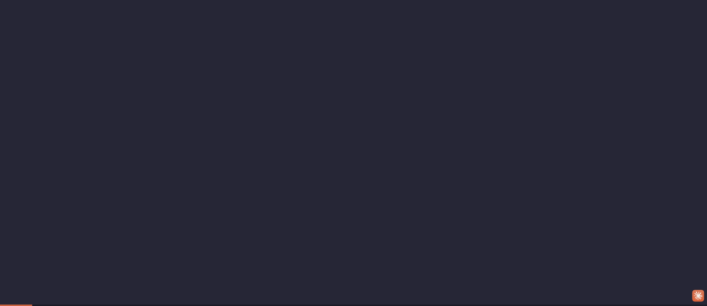

Test scenario: Save (Cmd+S) & Export Flow · ZenUML Web Sequence · 2026-05-09
Three critical interactions — saving, error handling, and export — all provide zero user feedback. Users have no way to know if their work was saved, whether their syntax is valid, or why export requires an account.

After pressing Cmd+S to save, the UI is pixel-identical before and after. No toast, no status indicator, no title asterisk, no brief flash — nothing confirms the save happened. Users must guess whether their work is safe.
After typing new content but before saving, there is no visual signal that the document has unsaved changes. If the tab is closed or the page refreshes, users lose work with no warning.
Clicking "PNG" immediately triggers a "Welcome to ZenUML.com" login modal with no prior indication that export requires an account. The export button has no lock icon, tooltip, or disabled state to signal it's auth-gated.
The login modal says "Welcome to ZenUML.com" and offers GitHub / Google / Facebook sign-in, but gives no context for why it appeared. Users who clicked "PNG" don't know if they're signing in to export, to save to cloud, or for something else entirely.
When the user types invalid syntax (e.g. B--> INVALID SYNTAX ???), the parser treats "INVALID", "SYNTAX", and "???" as participant names and renders a diagram with nonsensical boxes — with no error highlight, no inline warning, and no status indicator.